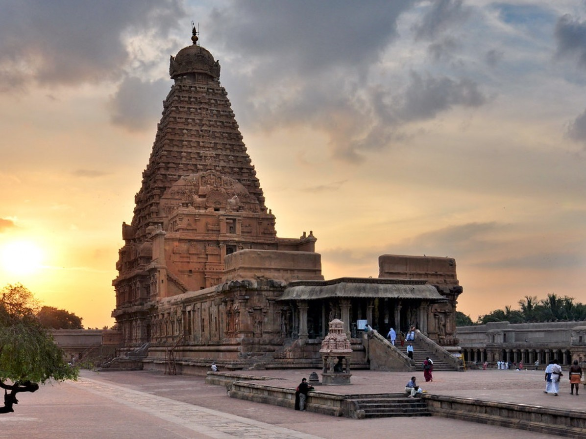
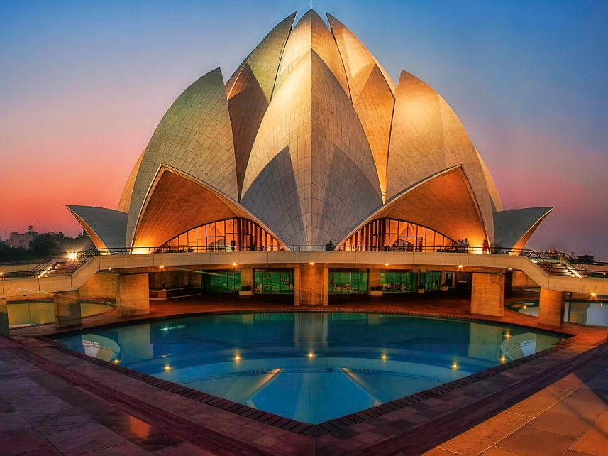
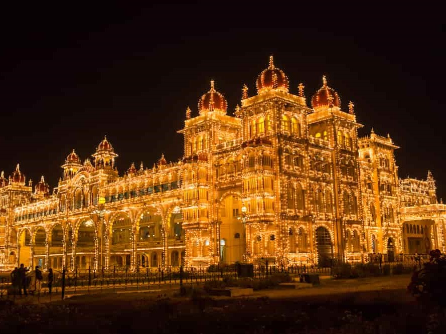
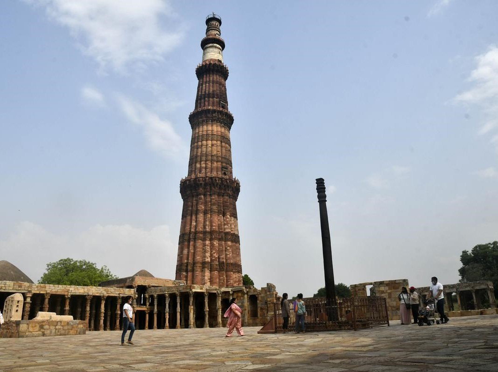
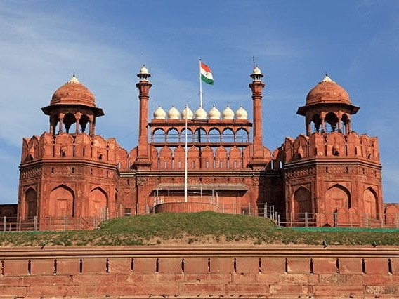
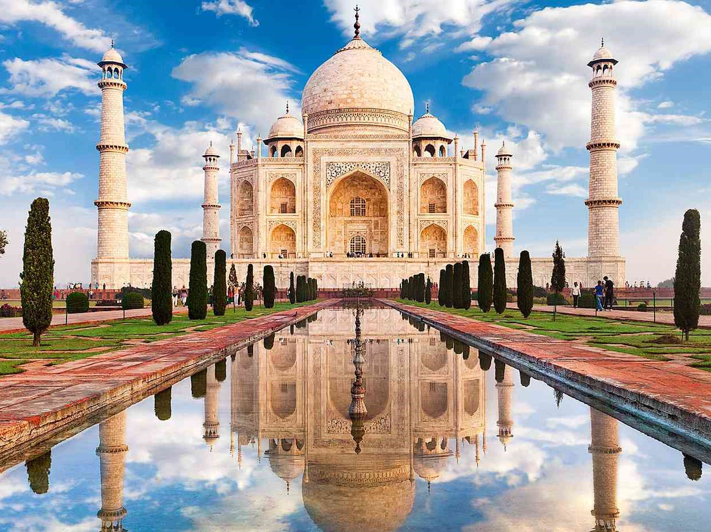

BRIHADISHVARA TEMPLEThe Brihadishvara Temple also known as the Rajarajeshvara, after the king who built it, the Brihadishvara (or Brhadisvara) temple was constructed between 995 and 1025 CE using Chola war booty and tribute from Sri Lanka. The temple was dedicated to the Hindu god Shiva.The original monuments of this 11th-century temple were built around a moat
MORE INFO

LOTUS TEMPLEThe Lotus Temple was consecrated and opened to the public in December 1986. It was designed by Iranian architect Fariborz Sahba, who won acclaim for the project even before the temple was completed. It subsequently received several awards.
The Lotus Temple derives its name from its design. The temple was opened to the public on 1 January 1987.
MORE INFO

MYSORE PALACEMysore Palace, also known as Amba Vilas Palace, is a historical palace and a royal residence. It is located in Mysore, Karnataka. It used to be the official residence of the Wadiyar dynasty and the seat of the Kingdom of Mysore. The palace is in the centre of Mysore. Mysore is commonly described as the 'City of Palaces'.
MORE INFO

QUTAB MINARThe Qutb Minar, also spelled Qutub Minar and Qutab Minar, is a minaret and "victory tower" that forms part of the Qutb complex, which lies at the site of Delhi’s oldest fortified city, Lal Kot, founded by the Tomar Rajputs.It is a UNESCO World Heritage Site in the Mehrauli area of South Delhi, India.It is one of the most visited tourist spots in the city, mostly built between 1199 and 1220.
MORE INFO

RED FORTThe Red Fort or Lal Qila is a historic fort in Old Delhi, Delhi in India that served as the main residence of the Mughal Emperors. Emperor Shah Jahan commissioned construction of the Red Fort on 12 May 1638, when he decided to shift his capital from Agra to Delhi. Originally red and white, its design is credited to architect Ustad Ahmad Lahori, who also constructed the Taj Mahal.
MORE INFO

TAJ MAHALThe Taj Mahal ('Crown of the Palace') is an Islamic ivory-white marble mausoleum on the right bank of the river Yamuna in the Indian city of Agra. It was commissioned in 1631 by the Mughal emperor Shah Jahan (r. 1628–1658) to house the tomb of his favourite wife, Mumtaz Mahal; it also houses the tomb of Shah Jahan himself.Construction of the mausoleum was essentially completed in 1643.
MORE INFO